The Bode Plots#
Our goals:
Draw the Bode plots with symbolic math.
Explore the asymptotic Bode plots that is found in general control text books and express theses text-book steps into more generalized piecewise linear funtions.
Preparations#
Show code cell source
import numpy as np
from sympy import *
from sympy.physics.control.lti import TransferFunction
from mathprint import *
import matplotlib.pyplot as plt
plt.rcParams.update({
"text.usetex": True,
"font.family": "serif",
"font.size": 10,
})
Define variables that we are going to use repetitively. We also need to define specific prpoperties of the variables.
t = symbols('t' , real=True)
s = symbols('s' , complex=True)
omega = symbols('omega' , positive=True)
a, b = symbols('a b' , real=True)
zeta = symbols('zeta' , positive=True)
omega_n = symbols('omega_n' , positive=True)
Bode Plots with Symbolic Math#
The Bode plots consist of two plots, the magnitude plot and the phase plot. To obtain these two plots, we substitute \(s=j \omega\) to the transfer function \(G(s)\) that we want to investigate.
Let us take the following transfer function as an example.
G = (0.5*s + 1.3) / (s**3 + 1.2*s**2 + 1.6*s)
mprint("G(s)=", latex(G))
By substituting \(s = j \omega\), we obtain:
Gjw = G.subs(s, I*omega)
mprint("G(j\\omega)=", latex(Gjw))
Next, we extract the magnitude and the phase equations. The magnitude equation is \(M(\omega)\):
M = Abs(Gjw)
mprint("M=", latex(M))
Mdb = 20*log(M,10)
mprint("M_{dB} = ", latex(Mdb))
The phase equation is \(\phi(\omega)\):
Phi = simplify(atan(im(Gjw)/re(Gjw)))
mprint("\\phi = ", latex(Phi))
Finally, we plot the two plots seperately.
mag = plot(Mdb, (omega, 0.1 , 100), size=(8, 3), show=False, title='$ M_{dB} $', xscale='log')
mag.show()
pha = plot(Phi, (omega, 0.1 , 100), size=(8, 3), title='$ \\phi $', show=False, xscale='log')
pha.show()
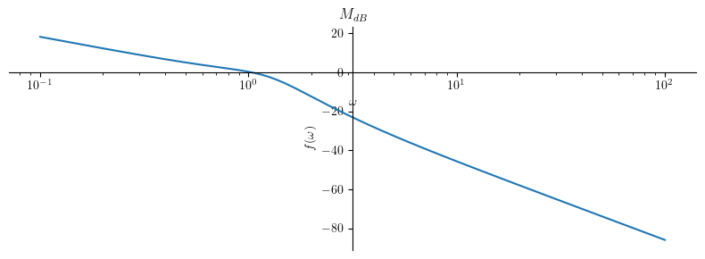
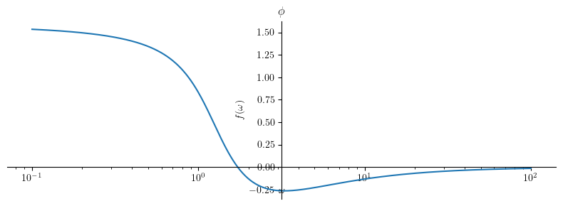
In summary, these are the fundamental steps that we must do to plot the frequence response (Bode plot) of a system defined by a transfer function \(G(s)\):
Do substitution: \(s = j \omega\) to \(G(s)\)
Compute \(G( j \omega )\)
The result is a complex function:
Extract the magnitude function: \( M = \big| G(j \omega) \big| \)
Convert the magnitude into dB: \( M_{dB} = 20 \log_{10} M \)
Extract the the phase function: \( \phi = \angle G(j \omega) \)
Asymptotic Bode Plots of Low-Order Transfer Functions#
It is very easy to execute those steps by using a computer. On the other hand, when we simply want to sketch the Bode plot without using a computer, we can use the asymptotic method to draw the approximated version of the Bode plot.
Case 1: A pole at the origin of the s-plane#
Let us start by first defining the transfer function:
H1 = 1/s
mprint('H(s)=', latex(H1))
After the substitution, we then obtain:
Hjw = H1.subs(s, I*omega)
M1 = simplify(Abs(Hjw))
Mdb1 = simplify(20*log(M1, 10))
Phi1 = arg(Hjw)
mprintb("M =", latex(M1))
mprintb("M_{dB} =", latex(Mdb1))
mprintb("\\phi =", latex(Phi1))
Magnitude plot:
Show code cell source
title = '$ M_{dB} $'
p1 = plot(Mdb1, (omega, 0.01 , 100), size=(4, 2), title=title, show=True, xscale='log')
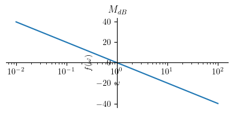
Phase plot:
Show code cell source
title = '$\\phi $'
p2 = plot(Phi1, (omega, 0.01 , 100), size=(4, 2), title=title, show=True, xscale='log')
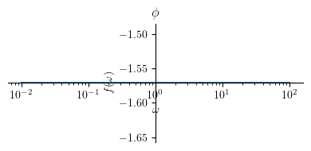
Case 2: A zero at the origin of the s-plane#
Let us start by first defining the transfer function:
H2 = s
mprint('H(s)=', latex(H2))
After the substitution, we then obtain:
Hjw = H2.subs(s, I*omega)
M2 = simplify(Abs(Hjw))
Mdb2 = simplify(20 * log(M2, 10))
Phi2 = arg(Hjw)
mprintb("M =", latex(M2))
mprintb("M_{dB} =", latex(Mdb2))
mprintb("\\phi =", latex(Phi2))
Magnitude plot:
Show code cell source
title = '$M_{dB}$'
p1 = plot(Mdb2, (omega, 0.01 , 100), size=(4, 2), title=title, show=True, xscale='log')
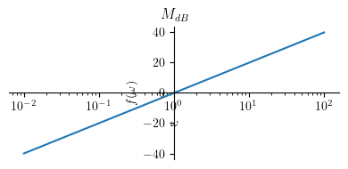
Phase plot:
Show code cell source
title = '$\\phi $'
p2 = plot(Phi2, (omega, 0.01 , 100), size=(4, 2), title=title, show=True, xscale='log')
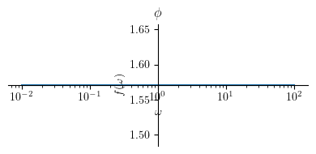
Case 3: A single real pole#
Let us start by first defining the transfer function:
H3 = 1/(s+a)
mprint('H(s)=', latex(H3))
After the substitution, we then obtain:
Hjw = H3.subs(s, I*omega)
M3 = simplify(Abs(Hjw))
Mdb3 = simplify(20 * log(M3, 10))
Phi3 = arg(Hjw)
mprintb("M =", latex(M3))
mprintb("M_{dB} =", latex(Mdb3))
mprintb("\\phi =", latex(Phi3))
Now, let us plot the results for both the magnitude and the phase. To do this, we must first set a numerical value for \(a\). Let us set \(a=1\).
a_ = 1
Next, let us write down the approximated version of the plots, for the magnitude and the phase. What we do here is a bit based on observations.
Magnitude plot:
Mhatdb3 = Piecewise((-20 * log(a, 10), omega <= a),
(-20 * log(omega, 10), True))
mprintb("\\hat{ M }_{dB} = ", latex(Mhatdb3))
Show code cell source
title = '$M_{dB}$'
p1 = plot(Mdb3.subs(a, a_), (omega, a_/100 , 100*a_), size=(4, 2), title=title, show=False, xscale='log')
p2 = plot(Mhatdb3.subs(a, a_), (omega, a_/100 , 100*a_), show=False)
p1.append(p2[0])
p1.show()
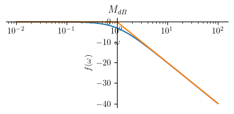
Phase plot:
Phihat3 = Piecewise((0, omega <= 0.1*a),
(-pi/4 * log(omega/(0.1*a), 10) , omega < a*10),
(-pi/2, True))
mprintb("\\hat{ \\phi } = ", latex(simplify(Phihat3)))
Show code cell source
title = '$ \\phi $'
p1 = plot(Phi3.subs(a, a_), (omega, a_/100 , 100*a_), size=(4, 2), title=title, show=False, xscale='log')
p2 = plot(Phihat3.subs(a, a_), (omega, a_/100 , 100*a_), show=False)
p1.append(p2[0])
p1.show()
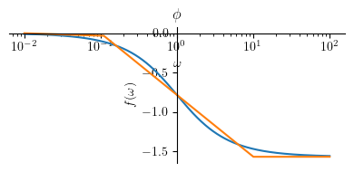
Case 4: A single real zero#
Let us start by first defining the transfer function:
H4 = s+a
mprint('H(s)=', latex(H4))
After the substitution, we then obtain:
Hjw = H4.subs(s, I*omega)
M4 = simplify(Abs(Hjw))
Mdb4 = simplify(20 * log(M4, 10))
Phi4 = arg(Hjw)
mprint("M =", latex(M4))
mprint("M_{dB} =", latex(Mdb4))
mprint("\\phi =", latex(Phi4))
Now, let us plot the results for both the magnitude and the phase. To do this, we must first set a numerical value for \(a\). Let us set \(a=1\).
Next, let us write down the approximated version of the plots, for both the magnitude and the phase. What we do here is a bit based on observations.
Magnitude plot:
Mhatdb4 = Piecewise((20 * log(a, 10), omega <= a),
(20 * log(omega, 10), True))
mprintb("\\hat{ M }_{dB} = ", latex(Mhatdb4))
Show code cell source
title = '$M_{dB}$'
p1 = plot(Mdb4.subs(a, a_), (omega, a_/100 , 100*a_), size=(4, 2), title=title, show=False, xscale='log')
p2 = plot(Mhatdb4.subs(a, a_), (omega, a_/100 , 100*a_), show=False)
p1.append(p2[0])
p1.show()
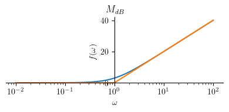
Phase plot:
Phihat4 = Piecewise((0, omega <= 0.1*a),
(pi/4 * log(omega/(0.1*a), 10) , omega < a*10),
(pi/2, True))
mprintb("\\hat{ \\phi } = ", latex(simplify(Phihat4)))
Show code cell source
title = '$ \\phi $'
p1 = plot(Phi4.subs(a, a_), (omega, a_/100 , 100*a_), size=(4, 2), title=title, show=False, xscale='log')
p2 = plot(Phihat4.subs(a, a_), (omega, a_/100 , 100*a_), show=False)
p1.append(p2[0])
p1.show()
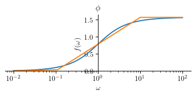
Case 5: Complex Conjugate Pole Pair#
Let us start by first defining the transfer function:
H5 = 1 / (s**2 + 2*zeta*omega_n*s + omega_n**2)
mprint('H(s)=', latex(H5))
By substituting \(s\) with \(j \omega\), we can obtain:
Hjw = H5.subs(s, I*omega)
M5 = simplify(Abs(Hjw))
Mdb5 = expand_log(20 * log(M5, 10))
Phi5 = arg(Hjw)
mprint("M =", latex(M5))
mprint("M_{dB} =", latex(Mdb5))
mprint("\\phi =", latex(Phi5))
Resonance peak:
Complex conjugate pole pair occurs when \(\zeta < 1\).
When \(\zeta < 1\), the system becomes underdamped and resonace peak appears in the magnitude plot.
Resonance peak appears at \(\omega_p\) and its peak magnitude is \(M_p\).
omega_p5 = solve(Eq(diff(M5, omega), 0), omega)
mprintb("\\omega_p=", latex(omega_p5[0]))
Mp5 = simplify(M5.subs(omega, omega_p5[0]))
Mdbp5 =simplify(Mdb5.subs(omega, omega_p5[0]))
mprintb("M_p = ", latex(Mp5))
mprintb("M_{p(dB)} = ", latex(Mdbp5))
Now, let’s express the asymptotic Bode plot as piecewise functions. At the moment, we will do this by intuition.
Mhatdb5 = Piecewise((-40 * log(omega_n, 10), omega <= omega_n),
(-40 * log(omega, 10), omega > omega_n))
mprintb("\\hat{ M }_{dB} ( \\omega ) = ", latex(Mhatdb5))
Magnitude plot:
For plotting, we need to define some numerical values for:
omega_n_ = 1
zeta_ = [0.1, 0.2, 0.5] # plot for several values
Show code cell source
title = '$ M_{dB} $'
p1 = plot(Mdb5.subs(([omega_n, omega_n_],[zeta, zeta_[0]])), (omega, omega_n_/10 , 10*omega_n_), line_color='r', size=(5, 3), title=title, show=False, xscale='log', legend=True)
p2 = plot(Mdb5.subs(([omega_n, omega_n_],[zeta, zeta_[1]])), (omega, omega_n_/10 , 10*omega_n_), line_color='b', show=False)
p3 = plot(Mdb5.subs(([omega_n, omega_n_],[zeta, zeta_[2]])), (omega, omega_n_/10 , 10*omega_n_), line_color='g', show=False)
p4 = plot(Mhatdb5.subs(([omega_n, omega_n_],[zeta, zeta_[0]])), (omega, omega_n_/10 , 10*omega_n_), line_color='k', show=False)
p1[0].label = "$\\zeta=" + str(zeta_[0]) + "$"
p2[0].label = "$\\zeta=" + str(zeta_[1]) + "$"
p3[0].label = "$\\zeta=" + str(zeta_[2]) + "$"
p4[0].label = ""
p1.append(p2[0])
p1.append(p3[0])
p1.append(p4[0])
p1.show()
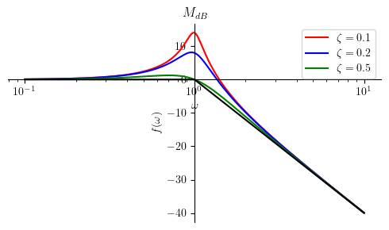
The general shape of the asymptotic magnitude plot is not affected by \(\zeta\).
We are not going to include the resonance peak for the asymptotic plots. However, we can still compute this peak value by using the equation expressed by \(M_{p(dB)}\):
print(Mdbp5.subs(([omega_n, omega_n_],[zeta, zeta_[0]])).evalf()) # for zeta[0]
print(Mdbp5.subs(([omega_n, omega_n_],[zeta, zeta_[1]])).evalf()) # for zeta[1]
print(Mdbp5.subs(([omega_n, omega_n_],[zeta, zeta_[2]])).evalf()) # for zeta[2]
14.0230481407449
8.13608784304507
1.24938736608300
Resonance peak happens at \(\omega = \omega_{p}\):
print(omega_p5[0].subs(([omega_n, omega_n_],[zeta, zeta_[0]])).evalf())
0.989949493661167
Phase plot:
Phihat5 = Piecewise((0, omega <= (omega_n / 10**zeta)),
(-pi/(2*zeta) * log(omega/(10**(-zeta)*omega_n), 10) , omega < (omega_n*10**zeta)),
(-pi, True))
mprintb("\\hat{ \\phi } ( \\omega ) = ", latex(Phihat5))
Show code cell source
title = '$ \\phi $'
p1 = plot(Phi5.subs(([omega_n, omega_n_],[zeta, zeta_[0]])), (omega, omega_n_/10 , 10*omega_n_), line_color='r', size=(5, 3), title=title, show=False, xscale='log', legend=True)
p2 = plot(Phi5.subs(([omega_n, omega_n_],[zeta, zeta_[1]])), (omega, omega_n_/10 , 10*omega_n_), line_color='b', show=False)
p3 = plot(Phi5.subs(([omega_n, omega_n_],[zeta, zeta_[2]])), (omega, omega_n_/10 , 10*omega_n_), line_color='g', show=False)
p4 = plot(Phihat5.subs(([omega_n, omega_n_],[zeta, zeta_[0]])), (omega, omega_n_/10 , 10*omega_n_), line_color='k', show=False)
p5 = plot(Phihat5.subs(([omega_n, omega_n_],[zeta, zeta_[1]])), (omega, omega_n_/10 , 10*omega_n_), line_color='k', show=False)
p6 = plot(Phihat5.subs(([omega_n, omega_n_],[zeta, zeta_[2]])), (omega, omega_n_/10 , 10*omega_n_), line_color='k', show=False)
p1[0].label = "$\\zeta=" + str(zeta_[0]) + "$"
p2[0].label = "$\\zeta=" + str(zeta_[1]) + "$"
p3[0].label = "$\\zeta=" + str(zeta_[2]) + "$"
p4[0].label = ""
p5[0].label = ""
p6[0].label = ""
p1.append(p2[0])
p1.append(p3[0])
p1.append(p4[0])
p1.append(p5[0])
p1.append(p6[0])
p1.show()
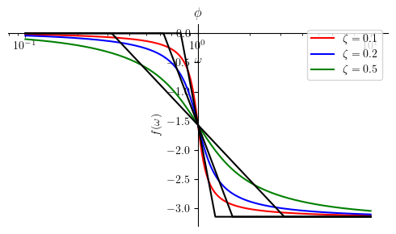
Case 6: Complex Conjugate Zero Pair#
Let us start by first defining the transfer function:
H6 = (s**2 + 2*zeta*omega_n*s + omega_n**2)
mprint('H(s)=', latex(H6))
Hjw = H6.subs(s, I*omega)
M6 = simplify(Abs(Hjw))
Mdb6 = simplify(20 * log(M6, 10))
Phi6 = arg(Hjw)
mprint("M =", latex(M6))
mprint("M_{dB} =", latex(Mdb6))
mprint("\\phi =", latex(Phi6))
Resonance peak:
Complex conjugate zero pair occurs when \(\zeta < 1\). Resonance peak appears in the Bode magnitude plot at \(\omega = \omega_n\). The magnitude at this resonance peak can be computed as:
omega_p6 = solve(Eq(diff(M6, omega), 0), omega)
mprintb("\\omega_p=", latex(omega_p6[0]))
Mp6 = simplify(M6.subs(omega, omega_p6[0]))
Mdbp6 =simplify(Mdb6.subs(omega, omega_p6[0]))
mprintb("M_p = ", latex(Mp6))
mprintb("M_{p(dB)} = ", latex(Mdbp6))
Magnitude plot:
We first present the piecewise logarithmic representation of the asymptotic Bode plot. After that, we present the plot for several diffrent values for \(\zeta\).
Mhatdb6 = Piecewise((40 * log(omega_n, 10), omega < omega_n),
(40 * log(omega, 10), omega >= omega_n))
mprintb("\\hat{ M } ( \\omega ) = ", latex(Mhatdb6))
Show code cell source
title = '$ M_{dB} $'
p1 = plot(Mdb6.subs(([omega_n, omega_n_],[zeta, zeta_[0]])), (omega, omega_n_/10 , 10*omega_n_), line_color='r', size=(5, 3), title=title, show=False, xscale='log', legend=True)
p2 = plot(Mdb6.subs(([omega_n, omega_n_],[zeta, zeta_[1]])), (omega, omega_n_/10 , 10*omega_n_), line_color='b', show=False)
p3 = plot(Mdb6.subs(([omega_n, omega_n_],[zeta, zeta_[2]])), (omega, omega_n_/10 , 10*omega_n_), line_color='g', show=False)
p4 = plot(Mhatdb6.subs(([omega_n, omega_n_],[zeta, zeta_[0]])), (omega, omega_n_/10 , 10*omega_n_), line_color='k', show=False)
p1[0].label = "$\\zeta=" + str(zeta_[0]) + "$"
p2[0].label = "$\\zeta=" + str(zeta_[1]) + "$"
p3[0].label = "$\\zeta=" + str(zeta_[2]) + "$"
p4[0].label = ""
p1.append(p2[0])
p1.append(p3[0])
p1.append(p4[0])
p1.show()
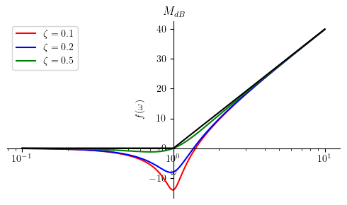
The general shape of the asymptotic magnitude plot is not affected by \(\zeta\).
We are not going to include the resonance peak for the asymptotic plots. However, we can still compute this peak value by using the equation expressed by \(M_{p(dB)}\):
print(Mdbp6.subs(([omega_n, omega_n_],[zeta, zeta_[0]])).evalf()) # for zeta[0]
print(Mdbp6.subs(([omega_n, omega_n_],[zeta, zeta_[1]])).evalf()) # for zeta[1]
print(Mdbp6.subs(([omega_n, omega_n_],[zeta, zeta_[2]])).evalf()) # for zeta[2]
-14.0230481407449
-8.13608784304507
-1.24938736608300
Resonance peak happens at \(\omega = \omega_{p}\):
print(omega_p6[0].subs(([omega_n, omega_n_],[zeta, zeta_[0]])).evalf())
0.989949493661167
Phase plot:
Similar to the prevoius section, we first present the piecewise logarithmic representation of the asymptotic Bode plot. After that, we present the plot for several diffrent values for \(\zeta\).
Phihat6 = Piecewise((0, omega <= (omega_n / 10**zeta)),
(pi/(2*zeta) * log(omega/(10**(-zeta)*omega_n), 10) , omega < (omega_n*10**zeta)),
(pi, True))
mprintb("\\hat{ \\phi } ( \\omega ) = ", latex(Phihat6))
Show code cell source
title = '$ \\phi $'
p1 = plot(Phi6.subs(([omega_n, omega_n_],[zeta, zeta_[0]])), (omega, omega_n_/10 , 10*omega_n_), line_color='r', size=(5, 3), title=title, show=False, xscale='log', legend=True)
p2 = plot(Phi6.subs(([omega_n, omega_n_],[zeta, zeta_[1]])), (omega, omega_n_/10 , 10*omega_n_), line_color='b', show=False)
p3 = plot(Phi6.subs(([omega_n, omega_n_],[zeta, zeta_[2]])), (omega, omega_n_/10 , 10*omega_n_), line_color='g', show=False)
p4 = plot(Phihat6.subs(([omega_n, omega_n_],[zeta, zeta_[0]])), (omega, omega_n_/10 , 10*omega_n_), line_color='k', show=False)
p5 = plot(Phihat6.subs(([omega_n, omega_n_],[zeta, zeta_[1]])), (omega, omega_n_/10 , 10*omega_n_), line_color='k', show=False)
p6 = plot(Phihat6.subs(([omega_n, omega_n_],[zeta, zeta_[2]])), (omega, omega_n_/10 , 10*omega_n_), line_color='k', show=False)
p1.append(p2[0])
p1.append(p3[0])
p1.append(p4[0])
p1.append(p5[0])
p1.append(p6[0])
p1[0].label = "$\\zeta=" + str(zeta_[0]) + "$"
p2[0].label = "$\\zeta=" + str(zeta_[1]) + "$"
p3[0].label = "$\\zeta=" + str(zeta_[2]) + "$"
p4[0].label = ""
p5[0].label = ""
p6[0].label = ""
p1.show()
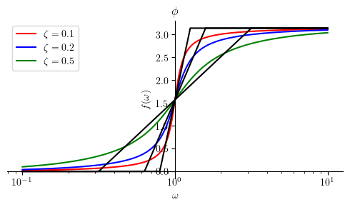
Summary#
Finally, let us summarize all boxed formulas.
Asymptotic Bode as piecewise functions#
The following table shows piecewise approximations of a Bode plot.
Show code cell source
from pandas import DataFrame
from IPython.display import Markdown
def makelatex(args):
return ["${}$".format(latex(a)) for a in args]
Hs = [H1, H2, H3, H4, H5, H6]
Mdbs = [Mdb1, Mdb2, Mhatdb3, Mhatdb4, Mhatdb5, Mhatdb6]
Phis = [Phi1, Phi2, Phihat3, Phihat4, Phihat5, Phihat6]
dic = {'$ H(s) $': makelatex(Hs),
'$ M_{dB} $': makelatex(Mdbs),
'$ \\phi $': makelatex(Phis)}
df = DataFrame(dic)
Markdown(df.to_markdown(index=False))
\( H(s) \) |
\( M_{dB} \) |
\( \phi \) |
|---|---|---|
\(\frac{1}{s}\) |
\(- \frac{20 \log{\left(\omega \right)}}{\log{\left(10 \right)}}\) |
\(- \frac{\pi}{2}\) |
\(s\) |
\(\frac{20 \log{\left(\omega \right)}}{\log{\left(10 \right)}}\) |
\(\frac{\pi}{2}\) |
\(\frac{1}{a + s}\) |
\(\begin{cases} - \frac{20 \log{\left(a \right)}}{\log{\left(10 \right)}} & \text{for}\: a \geq \omega \\- \frac{20 \log{\left(\omega \right)}}{\log{\left(10 \right)}} & \text{otherwise} \end{cases}\) |
\(\begin{cases} 0 & \text{for}\: \omega \leq 0.1 a \\- \frac{\pi \log{\left(\frac{10.0 \omega}{a} \right)}}{4 \log{\left(10 \right)}} & \text{for}\: \omega < 10 a \\- \frac{\pi}{2} & \text{otherwise} \end{cases}\) |
\(a + s\) |
\(\begin{cases} \frac{20 \log{\left(a \right)}}{\log{\left(10 \right)}} & \text{for}\: a \geq \omega \\\frac{20 \log{\left(\omega \right)}}{\log{\left(10 \right)}} & \text{otherwise} \end{cases}\) |
\(\begin{cases} 0 & \text{for}\: \omega \leq 0.1 a \\\frac{\pi \log{\left(\frac{10.0 \omega}{a} \right)}}{4 \log{\left(10 \right)}} & \text{for}\: \omega < 10 a \\\frac{\pi}{2} & \text{otherwise} \end{cases}\) |
\(\frac{1}{\omega_{n}^{2} + 2 \omega_{n} s \zeta + s^{2}}\) |
\(\begin{cases} - \frac{40 \log{\left(\omega_{n} \right)}}{\log{\left(10 \right)}} & \text{for}\: \omega \leq \omega_{n} \\- \frac{40 \log{\left(\omega \right)}}{\log{\left(10 \right)}} & \text{otherwise} \end{cases}\) |
\(\begin{cases} 0 & \text{for}\: \omega \leq 10^{- \zeta} \omega_{n} \\- \frac{\pi \log{\left(\frac{10^{\zeta} \omega}{\omega_{n}} \right)}}{2 \zeta \log{\left(10 \right)}} & \text{for}\: \omega < 10^{\zeta} \omega_{n} \\- \pi & \text{otherwise} \end{cases}\) |
\(\omega_{n}^{2} + 2 \omega_{n} s \zeta + s^{2}\) |
\(\begin{cases} \frac{40 \log{\left(\omega_{n} \right)}}{\log{\left(10 \right)}} & \text{for}\: \omega < \omega_{n} \\\frac{40 \log{\left(\omega \right)}}{\log{\left(10 \right)}} & \text{otherwise} \end{cases}\) |
\(\begin{cases} 0 & \text{for}\: \omega \leq 10^{- \zeta} \omega_{n} \\\frac{\pi \log{\left(\frac{10^{\zeta} \omega}{\omega_{n}} \right)}}{2 \zeta \log{\left(10 \right)}} & \text{for}\: \omega < 10^{\zeta} \omega_{n} \\\pi & \text{otherwise} \end{cases}\) |
Resonance peaks#
The following table summarizes when a resonance occurs and its peak value.
Show code cell source
Hs = [H5, H6]
wp = [omega_p5[0], omega_p6[0]]
Mp = [Mp5, Mp6]
Mpdb = [Mdbp5, Mdbp6]
dic = {'$H(s)$': makelatex(Hs),
'$ \\omega_p $': makelatex(wp),
'$ M_p $': makelatex(Mp),
'$ M_{p(dB)} $': makelatex(Mpdb)}
df = DataFrame(dic)
Markdown(df.to_markdown(index=False))
\(H(s)\) |
\( \omega_p \) |
\( M_p \) |
\( M_{p(dB)} \) |
|---|---|---|---|
\(\frac{1}{\omega_{n}^{2} + 2 \omega_{n} s \zeta + s^{2}}\) |
\(\omega_{n} \sqrt{1 - 2 \zeta^{2}}\) |
\(\frac{1}{2 \omega_{n}^{2} \zeta \sqrt{1 - \zeta^{2}}}\) |
\(- \frac{10 \log{\left(- 4 \omega_{n}^{4} \zeta^{2} \left(\zeta^{2} - 1\right) \right)}}{\log{\left(10 \right)}}\) |
\(\omega_{n}^{2} + 2 \omega_{n} s \zeta + s^{2}\) |
\(\omega_{n} \sqrt{1 - 2 \zeta^{2}}\) |
\(2 \omega_{n}^{2} \zeta \sqrt{1 - \zeta^{2}}\) |
\(\frac{10 \log{\left(4 \omega_{n}^{4} \zeta^{2} \left(1 - \zeta^{2}\right) \right)}}{\log{\left(10 \right)}}\) |